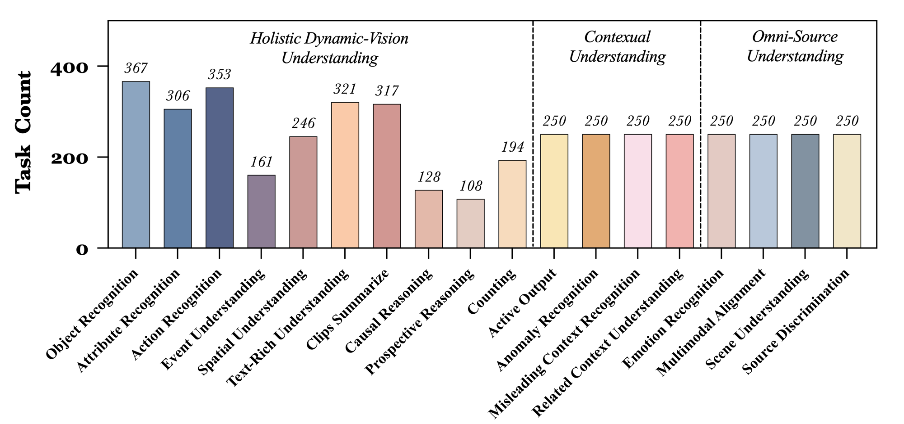
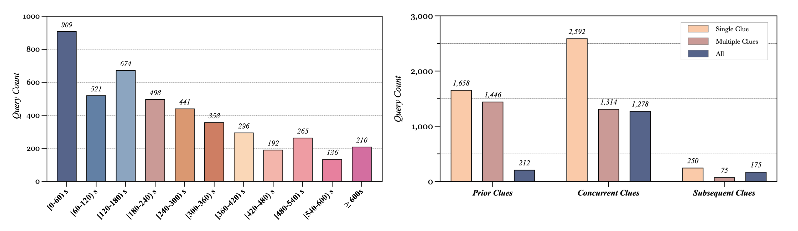

| Rank | Model | LLM Params |
Frames | Date | Overall (%) | Real-Time Visual Understanding (%) | Omni-Source Understanding (%) | Contextual Understanding (%) |
|---|---|---|---|---|---|---|---|---|
|
Gemini 1.5 Pro
|
- | Video | 2024-06-15 | 66.90 | 75.69 | 60.22 | 47.79 | |
| Qwen2-VL
Alibaba |
7B | 768 | 2024-08-19 | 53.91 | 69.04 | 34.90 | 30.37 | |
| GPT-4o
OpenAI |
- | 32 | 2024-06-15 | 59.83 | 73.28 | 44.50 | 36.96 | |
| LLaVA-Video
Bytedance & NTU S-Lab |
32B | 64 | 2024-08-28 | 52.64 | 66.96 | 34.90 | 30.04 | |
|
LLaVA-OneVision
Bytedance & NTU S-Lab |
7B | 32 | 2024-08-08 | 56.16 | 71.12 | 38.40 | 31.63 | |
| VideoLLaMA 2
Alibaba |
7B | 32 | 2024-08-29 | 40.43 | 49.52 | 32.40 | 22.08 | |
| VILA-1.5
NVIDIA & MIT |
8B | 14 | 2024-07-21 | 43.18 | 52.32 | 33.10 | 27.24 | |
| MiniCPM-V 2.6
OpenBMB |
8B | 64 | 2024-08-12 | 53.71 | 67.44 | 35.00 | 34.21 | |
| Claude 3.5 Sonnet
Anthropic |
- | 20 | 2024-07-30 | 57.34 | 72.44 | 36.80 | 35.83 | |
| InternVL2
Shanghai AI Lab |
8B | 16 | 2024-07-18 | 51.06 | 63.72 | 35.80 | 30.59 | |
| Kangaroo
Meituan & UCAS |
8B | 64 | 2024-07-23 | 50.97 | 64.60 | 34.20 | 29.32 | |
| Video-CCAM
QQMM |
14B | 96 | 2024-07-16 | 42.34 | 53.96 | 29.70 | 21.83 | |
| LongVA
NTU S-Lab |
7B | 128 | 2024-06-25 | 48.55 | 59.96 | 35.40 | 29.34 |

Introduction
The rapid development of Multimodal Large Language Models (MLLMs) has expanded their capabilities from image comprehension to video understanding. However, most of these MLLMs focus primarily on offline video comprehension, necessitating extensive processing of all video frames before any queries can be made. This presents a significant gap compared to the human ability to watch, listen, think, and respond to streaming inputs in real time, highlighting the limitations of current MLLMs. In this paper, we introduce StreamingBench, the first comprehensive benchmark designed to evaluate the streaming video understanding capabilities of MLLMs. StreamingBench assesses three core aspects of streaming video understanding: real-time visual understanding, omni-source understanding, and contextual understanding. The benchmark consists of 18 tasks, featuring 900 videos and 4,500 human-curated QA pairs. Each video features five questions presented at different time points to simulate a continuous streaming scenario. We conduct experiments on StreamingBench with 13 open-source and proprietary MLLMs and find that even the most advanced proprietary MLLMs like Gemini 1.5 Pro and GPT-4o perform significantly below human-level streaming video understanding capabilities. We hope our work can facilitate further advancements for MLLMs, empowering them to approach human-level video comprehension and interaction in more realistic scenarios.
* This audio was generated by NoteBookLM
Leaderboard
Data Statistics




Visualization
Experiment Results
BibTeX